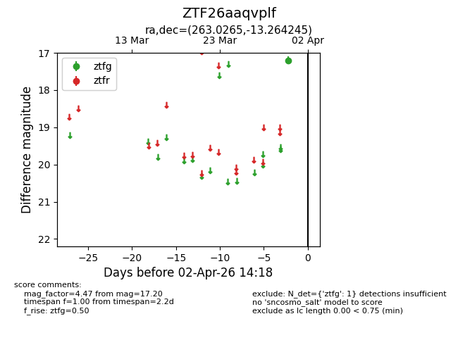
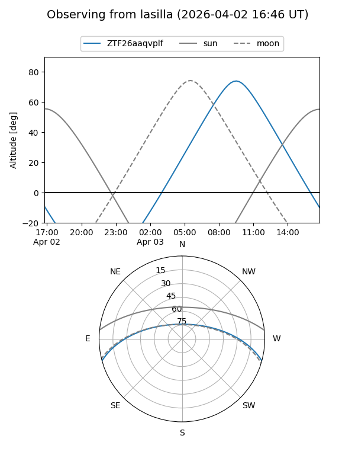
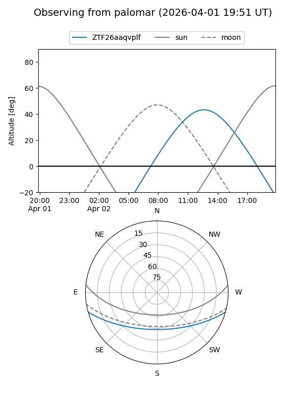

ZTF26aaqvplf
Target ZTF26aaqvplf at 2026-04-02 14:24
Aliases and brokers:
FINK: link
Lasair: link
ALeRCE: link
alt names
ZTF26aaqvplf (ztf,fink_ztf)
Coordinates:
equatorial (ra, dec) = 263.0265,-13.26424
equatorial (HMS+DMS) = 17:32:06.35,-13:15:51.28
galactic (l, b) = (11.7512,+10.91063)
Flags:
Photometry:
last ztfg=17.20
1 ztfg detections
Lightcurve

Visibility


Additional plots